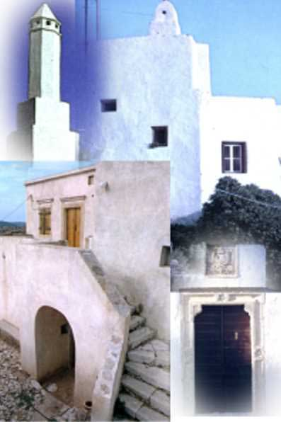

|

Μελετώντας την αρχιτεκτονική των κατοικιών στα Κύθηρα θα διαπιστώσεις ότι συνδέεται άμεσα με την ίδια την ιστορία του νησιού και τις σχέσεις που αυτό ανέπτυξε με γειτονικές περιοχές του ελλαδικού χώρου, την περίοδο των Δυτικών κυριαρχιών. Τα βενετσιάνικα στοιχεία με τις τοξωτές πόρτες ,τις καμάρες και τις διακοσμήσεις των ανοιγμάτων, που ήρθαν από την Κρήτη και αργότερα από τα Επτάνησα, μαζί με τη νησιώτικη αιγαιοπελαγίτικη παράδοση, με τους ασβεστωμένους τοίχους και τις επίπεδες στέγες, προσαρμόστηκαν στη μορφολογία του εδάφους, στις κλιματικές συνθήκες και στα οικοδομικά υλικά που προσέφερε το νησί, και έδωσαν την τοπική αρχιτεκτονική φυσιογνωμία των κατοικιών. Κυρίαρχο στοιχείο είναι οι λιτές κατασκευές, λόγω των περιορισμένων οικονομικών πόρων των κατοίκων.
Χαρακτηριστική ιδιαιτερότητα των κατοικιών αποτελούν οι καμινάδες, που είναι προσαρμοσμένες στις κλιματικές συνθήκες του νησιού. Είναι κωνικές και ψηλές, λόγω των ισχυρών και χωρίς συγκεκριμένη κατεύθυνση ανέμων. Εντυπωσιακές είναι οι καμινάδες που προεξέχουν από τον τοίχο του σπιτιού, καθώς στηρίζονται σε περίτεχνα «φουρούσια».
Παρατηρούνται τρεις κατηγορίες κατοικιών, που χαρακτηρίζουν την οικονομική κατάσταση, αλλά κυρίως την κοινωνική θέση των ιδιοκτητών τους:
Τα αρχοντικά, κατοικίες των ευγενών της βενετικής κυριαρχίας (1207 – 1897)
Οι αστικές κατοικίες της ανερχόμενης αστικής τάξης, που εμφανίζονται προς τα τέλη της Ενετοκρατίας, αλλά κυρίως την περίοδο της Βρετανικής Προστασίας (1814 – 1864).
Οι λαϊκές κατοικίες, οι κατοικίες του φτωχού λαού.
|
|